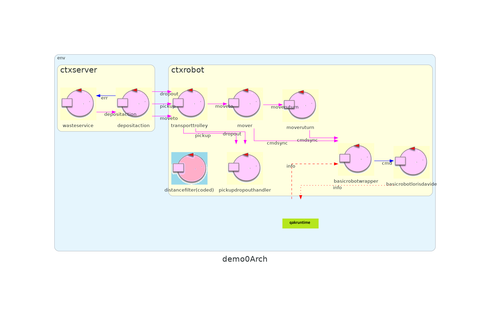
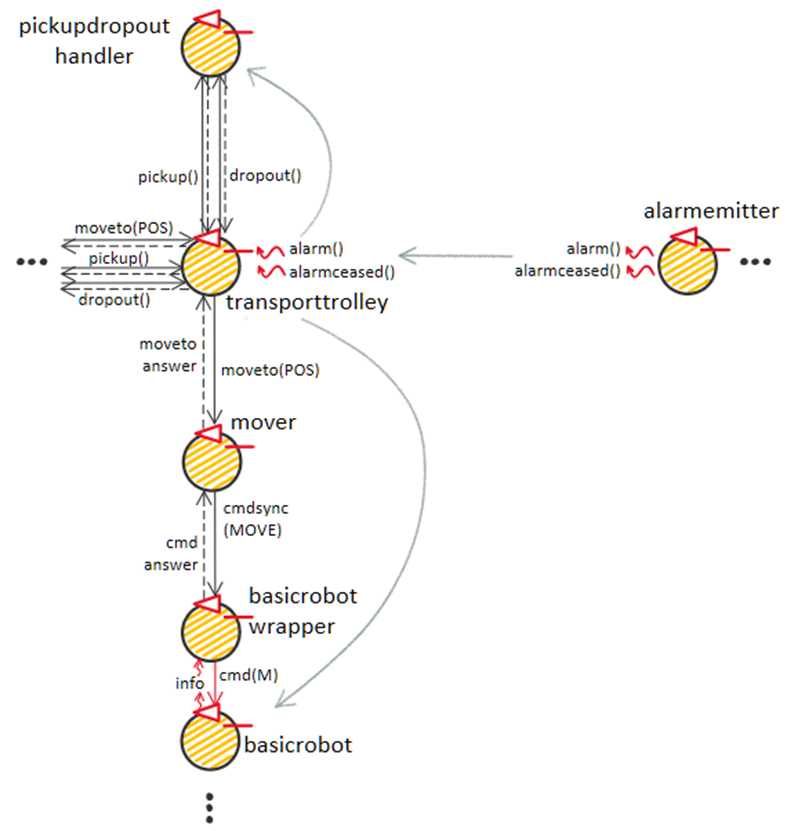
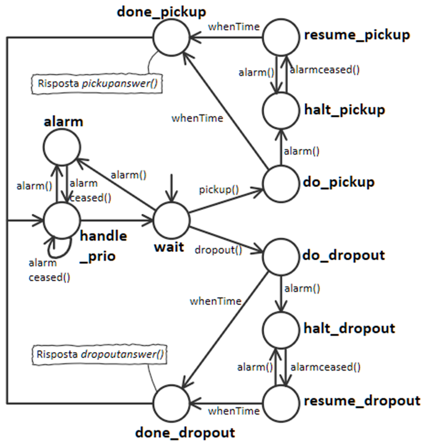
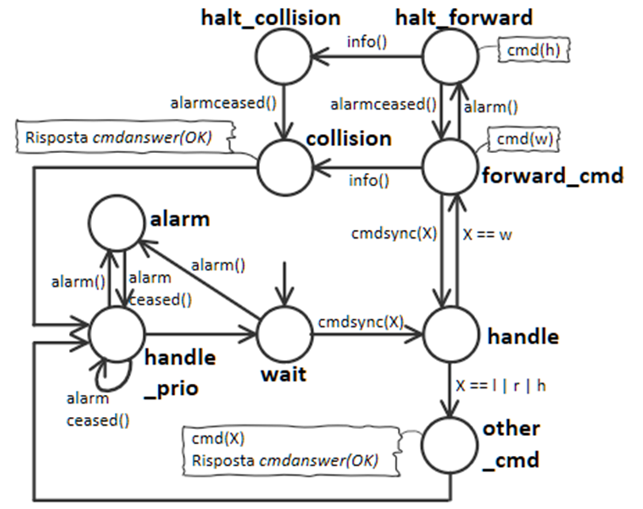

Introduction
Progetto finale di ISS, che consiste in un impianto di smistamento dei rifiuti nel quale un robot deve trasportare il materiale dal camion al relativo container
Requirements
Requirement analysis
Una più approfondita analisi insieme alle osservazioni qui esposte ci permettono di dettagliare meglio il comportamento che deve assumere il robot e il Led al verificarsi di allarmi:
- In caso di allarme il robot dovrebbe fermarsi a causa di una emergenza, quindi è opportuno interrompere, nel limite del possibile, più operazioni possibili.
Sappiamo tuttavia dal committente che non dovremo interrompere il robot mentre questo si sta girando.
Tutto questo ci permette di dedurre che le operazioni che devono essere interrotte e poi riprese sono quelle di Pickup, Dropout e di move forward - Il Led serve a segnalare il potenziale pericolo derivante dai movimenti del robot che sta gestendo una Deposit action. Dunque si dovrà segnalare quando il
macchinario è in movimento, o più in generale quando sta operando.
Per questo motivo si deduce che il Led:- Debba lampeggiare quando il robot sta gestendo (ho ha gestito e sta tornando a casa) una Deposit action, segnalando quindi che il robot può muoversi.
Inoltre, se il robot si trova in HOME ma si sta girando (magari per riposizionarsi dopo aver gestito una deposiaction), il Led deve comunque lampeggiare. - Resterà acceso solo se la depositaction viene interrotta da un allarme.
- Resterà spento solo quando non vi sarà più niente da gestire (e per questo motivo ci si troverà in HOME).
- Debba lampeggiare quando il robot sta gestendo (ho ha gestito e sta tornando a casa) una Deposit action, segnalando quindi che il robot può muoversi.
Scrum Goal and Work Plan
Scrum goal:
Obiettivo dello SPRINT2 è l'estensione della demo dello SPRINT1 per realizzare i requisiti riguardanti il Led e il Sonar specificati dal committente al punto 4, siccome questo rappresenta una parte più importante e corposa rispetto alla gui del punto 3.
Piano di lavoro:
- Analisi del problema di chi e in che forma riceve le informazioni relative ad un allarme per realizzare l'halt del robot
- Analisi del problema di chi e in che forma riceve le informazioni per realizzare l'aggiornamento dello stato del Led
- Sviluppo / adattamento dei componenti necessari
- Realizzazione di un modello eseguibile (a tal proposito verrà utilizzato il metamodello QAK).
- Realizzazione di un (più completo) test-plan per il modello
Problem analysis
Architettura logica precedente:
Sonar
Che informazioni invia il sonar?
Trattandosi di un dispositivo di input, ha senso che venga emesso un evento quando è disponibile una nuova misura (il che avverrà con una certa periodicità).
Per quanto riguarda il tipo di informazione emessa, è possibile:
- Emettere eventi con la distanza rilevata.
Pro: più flessibile nel caso in cui un altro contesto abbia bisogno della distanza precisa - Emettere eventi solo per notificare se la distanza è diventata maggiore o minore di DLIMIT.
Pro: generato (molto) meno traffico
Analizzando il problema, emerge che l'unico compito di questo sonar è quello di rilevare la presenza o meno di una mano, che è il modo con il quale si intende triggerare il meccanismo di allarme. Per questo motivo si può ragionevolmente affermare che nessun componente al di fuori del raspberry necessiterà mai della distanza effettivamente misurata, e che il sistema nel suo complesso sia interessato solamente a due tipi di avvenimenti (eventi):
- Quando viene rilevato un allarme
- Quando l'allarme attualmente in corso è cessato
Event alarm : alarm(_)
Event alarmceased : alarmceased(_)
Risulta quindi logicamente sensato porre in cascata al Sonar (il quale potrà emettere eventi locali di distanza misurata) un componente dedicato all'invio system-wide degli eventi di allarme e cessato allarme.
Inoltre, al fine di realizzare un buon test plan, è opportuno che il sonar possa essere disattivato in modo che gli allarmi possano essere inviati on demand dal test stesso
Event local_sonardata : distance( V ) //for the application level
Dispatch sonaractivate : sonaractivate(_)
Dispatch sonardeactivate : sonaractivate(_)
Per implementare il componente sarà quindi opportuno modificare il Sonar di unibo.sonarqak22, motivo per cui chiameremo tale componente sonarlorisdavide

Chi gestisce gli allarmi per implementare l'halt?
Per far si che la catena trasporttrolley, pickupdropouthandler, mover, basicrobotwrapper faccia fermare il trolley, abbiamo due possibilità:- Gli allarmi sono gestiti in maniera centralizzata dal trasporttrolley (poi esso provvederà a comandare opportunamente i componenti di più basso livello)
 Pro: il trolley potrebbe avere una concezione del proprio stato che include anche la possibilità di essere bloccato da un allarme. In altre parole può calcolare il Transporttrolleystate. - Gli allarmi sono gestiti direttamente dai componenti di più basso livello (pickupdropouthandler e basicrobotwrapper).
 Pro: Il tutto avviene in maniera trasparente rispetto ai componenti trasporttrolley e mover, poichè pickupdropouthandler e basicrobotwrapper
risponderanno ai componenti di più alto livello solo una volta che il comando è stato effettivamente completato, il che avviene se non vi sono allarmi in corso.
Pro: Il tutto avviene in maniera trasparente rispetto ai componenti trasporttrolley e mover, poichè pickupdropouthandler e basicrobotwrapper
risponderanno ai componenti di più alto livello solo una volta che il comando è stato effettivamente completato, il che avviene se non vi sono allarmi in corso.
Idealmente dovrebbero essere i componenti di più basso livello a gestire gli allarmi, siccome dovrebbero essere loro a sapere quali sono i comandi da inviare e quando impartirli. Si noti infatti che il transporttrolley comanda solo spostamenti di alto livello da una Position all'altra, e non sa se il robot sta girando (mossa che non deve essere interrotta) o se sta andando avanti (mossa che deve essere interrotta).
In seguito a tutte queste osservazioni risulterebbe quindi conveniente far gestire a pickupdropouthandler e basicrobotwrapper gli eventi di allarme, anche perchè Transporttrolleystate può sempre essere calcolato da un attore a parte osservando altri attori
Led
Come calcolare lo stato del Led?
Lo stato del Led dipende:
- Dal fatto che il robot si trovi o meno in HOME senza dover gestire nient'altro. L'informazione è ottenibile osservando il mover
- Dal fatto che il robot sia in movimento (o che comunque stia operando) piuttosto che si trovi invece bloccato da un allarme. L'informazione è ottenibile da basicrobotwrapper e pickupdropouthandler
Dunque potrà essere creato una specie di controller che ossreva questi attori e che invia messaggi al Led.
Come interagire con il componente Led?
Il componente Led può ricevere gli aggiornamenti di stato tramite eventi, il che permette di realizzare un buon loose binding tra il Led e il resto del sistema. Inoltre lo stato del Led sulla gui potrà essere aggiornato facendo uso del medesimo evento.
Event update_led : update_led(LEDSTATE) // LEDSTATE = ON | OFF | BLINK
Riassunto situazione attuale:
Architettura logica:
Note
Ai soli fini di testing è previsto un attore alarmreceivertest in grado registrare nella history quando viene ricevuto un allarmeQAK
Modello del sistema QAKTestplan (non ancora eseguibili):
Project
Procediamo con lo sviluppo vero e proprio dei componenti. Essi sono tutti presenti nel file QAK di questo sprint, ma vengono qui riportate e spiegate le macchine a stati che li implementano.
pickupdropouthandler
La macchina gestisce prioritariamente i messaggi di alarm e alarmceased. Se la macchina a stati si trova nello stato di alarm, allora non verrà effettuata alcuna operazione fino a che l'allarme non sarà cessato. Se invece non vi è alcun allarme e arriva una richiesta di Pickup o di Dropout, allora si passa da wait a do_pickup o do_dropout. Se durante tali operazioni giunge un allarme, queste vengono interrotte (stati halt_pickup e halt_dropout), e si passa agli stati di resume (resume_pickup e resume_dropout) solo una volta cessato l'allarme.
Note:
- Solo una volta terminata l'operazione si risponde a colui che ha fatto la richiesta (transporttrolley in questo caso), di conseguenza anche le macchine a più alto livello rimarranno bloccate durante un allarme.
- Gli allarmi potevano essere gestiti come interrupt. Tuttavia al tempo dello sviluppo di questo sprint, il supporto runtime non è stato ritenuto sufficientemente stabile da poter utilizzare la relativa feature, e quindi si hanno diversi stati di halt/alarm. Inoltre la routine di gestione dell'halt del Pickup potrebbe un domani essere diversa da quella di Dropout.
- Siccome non si deve perdere nemmeno un messaggio di allarme, gli eventi alarm e alarmceased vengono trasformati in messaggi di tipo Dispatch da un apposito attore "receiver" (alarmreceiverpickupdropdown) prima di giungere alla macchina corrente. In questo modo i messaggi di allarme vengono accodati invece di essere scartati se arrivano mentre si è in uno stato che non prevede reazioni ad essi.
basicrobotwrapper
La macchina gestisce prioritariamente i messaggi di alarm e alarmceased. Se la macchina a stati si trova nello stato di alarm, allora non verrà effettuata alcuna
operazione fino a che l'allarme non sarà cessato. Se invece non vi è alcun allarme e arriva una richiesta, allora si passa da wait a forward_cmd o other_cmd a
seconda che il comando sia di move forward o meno. Se durante una move forward giunge un allarme, il robot viene fermato (halt_forward) e riprenderà ad andare in avanti solo a
cessato allarme (forward_cmd). Quando viene incontrato l'ostacolo si risponde al chiamante (stato collision) e si attendono i prossimi comandi.
Un caso particolare è se l'evento di info (che segnala la collisione) avviene mentre si è in halt_forward (magari perché l'allarme è giunto poco prima della collisione, e il
robot non ha fatto in tempo a fermarsi): in tal caso si attende in halt_collision il cessato allarme, per poi passare direttamente a collision (N.B: se si passasse
direttamente da halt_forward a collision durante un allarme, l'evento alarm verrebbe consumato e la macchina sarebbe pronta ad interpretare ed eseguire nuovi
comandi anche se l'alarmceased non è ancora arrivato).
Per gli altri comandi (stato other_cmd) tutto questo non è necessario, siccome ne gli halt, ne i turn devono essere interrotti.
Note:
- Solo una volta terminata l'operazione si risponde a colui che ha fatto la richiesta (mover in questo caso), di conseguenza anche le macchine a più alto livello rimarranno bloccate durante un allarme.
- Siccome non si deve perdere nemmeno un messaggio di allarme, gli eventi alarm e alarmceased vengono trasformati in messaggi di tipo Dispatch da un apposito attore "receiver" (alarmreceiverbasicrobot) prima di giungere alla macchina corrente. In questo modo i messaggi di allarme vengono accodati invece di essere scartati se arrivano mentre si è in uno stato che non prevede reazioni ad essi.
ledalarmcontrol
Vengono osservati gli attori mover, basicrobotwrapper e pickupdropouthandler, e ad ogni singolo cambiamento di stato di questi si calcola il nuovo stato del Led.
Se tale stato differisce da quello in cui si trova attualmente, allora viene emesso l'evento update_led.
Dal mover ricaviamo la posizione attuale e la prossima destinazione che il robot deve raggiungere. Se queste sono entrambe "HOME", allora significa che il robot è inattivo, e
il Led deve essere in ogni caso spento.
Da basicrobotwrapper e pickupdropouthandler capiamo invece se il robot è attualmente in movimento, o se è invece bloccato. Il robot è effettivamente bloccato solo quando
sia basicrobotwrapper, sia pickupdropouthandler sono in uno stato di halt/alarm. Ad esempio, se il robot sta girando ed è appena arrivato un allarme,
pickupdropouthandler sarà nello stato alarm, mentre basicrobotwrapper entrerà in alarm solamente dopo aver completato il giro (ossia solo quando sarà
effettivamente fermo).
Il Led quindi rimane acceso solo quando si ha contemporaneamente che:
- basicrobotwrapper si trova in alarm, halt_forward o halt_collision
- pickupdropouthandler si trova in alarm, halt_pickup o halt_dropout
Test plans
Test effettuati:
- test_accepted(): Il robot viene interrotto durante una move forward, durante una turn, durante una Pickup e una Dropout. Si controlla che gli stati delle varie macchine assumano i valori che ci si aspetti
- test_halt_while_forward(): alarm inviato durante l'operazione di move forward: operazione interrotta e poi ripresa
- test_halt_before_forward(): alarm inviato prima dell'operazione di move forward: comincerà dopo alarmceased
- test_halt_while_turn(): alarm inviato durante l'operazione di turn: operazione continua, e solo dopo che è completata la macchina si blocca
- test_halt_before_turn(): alarm inviato prima dell'operazione di turn: comincerà dopo alarmceased
- test_halt_while_pickup(): alarm inviato durante l'operazione di Pickup: operazione interrotta e poi ripresa
- test_halt_before_pickup(): alarm inviato prima dell'operazione di Pickup: comincerà dopo alarmceased
- test_accepted(): Il robot viene interrotto durante una move forward, durante una turn, durante una Pickup e una Dropout. Si controlla che lo stato del Led assuma il valore che ci si aspetti
Classe di test TestSprint2_integration_halt.kt:
Classe per testare il sistema, in particolare per verificare che il robot si fermi
Classe di test TestSprint2_halt_unit_test.kt:
Test specifici per testare basicrobotwrapper e pickupdropouthandler. Per questi test viene anche fatto uso dell'attore ausiliario commandissuerfortests
Classe di test TestSprint2_integration_led.kt:
Classe per testare il sistema, in particolare per verificare che il led si comporti come ci si aspetti
Riassunto situazione attuale:
Architettura logica:

Note
- Ai soli fini di testing è previsto un attore commandissuerfortests in grado di effettuare singole richieste e registrare le risposte degli attori basicrobotwrapper e pickupdropouthandler.
- Anche se nell'immagine non figura (a causa del fatto che è un codedQActor), ledalarmcontrol riceve aggiornamenti coap da mover, basicrobotwrapper e pickupdropouthandler per poi emettere eventi di tipo update_led.
QAK
Metamodello eseguibile QAKTestplan:
TestSprint2_integration_halt.kt
TestSprint2_halt_unit_test.kt
TestSprint2_integration_led.kt